■坐标平面是在平面上显示的带有编号或者字母的行和列。通常在自动售货机、地图、棋盘和战舰游戏中可以见到。
■坐标平面可以让你对代数公式或等式有直观的了解。
垂直平面或竖轴可以用变量y 表示，也称为值域。
水平面或横轴可以用变量x 表示，也称为定义域。
■当在坐标平面上显示两个或两个以上的点时，两点之间就会产生一条斜线。这条斜线可以表示斜率、速率或两点间的距离等。
斜率＝垂直变化/水平变化。
■如图2-20所示，坐标轴上有一个点。这个点位于（3,4），在x 轴上对应的值为3，在y 轴上对应的值是4。
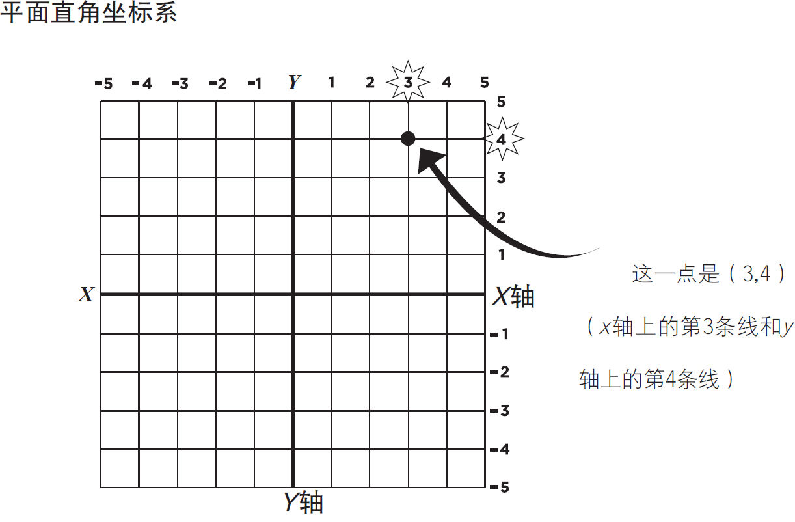
■在图2-21中，两个点A、B分别位于（1,1），（3,3）。
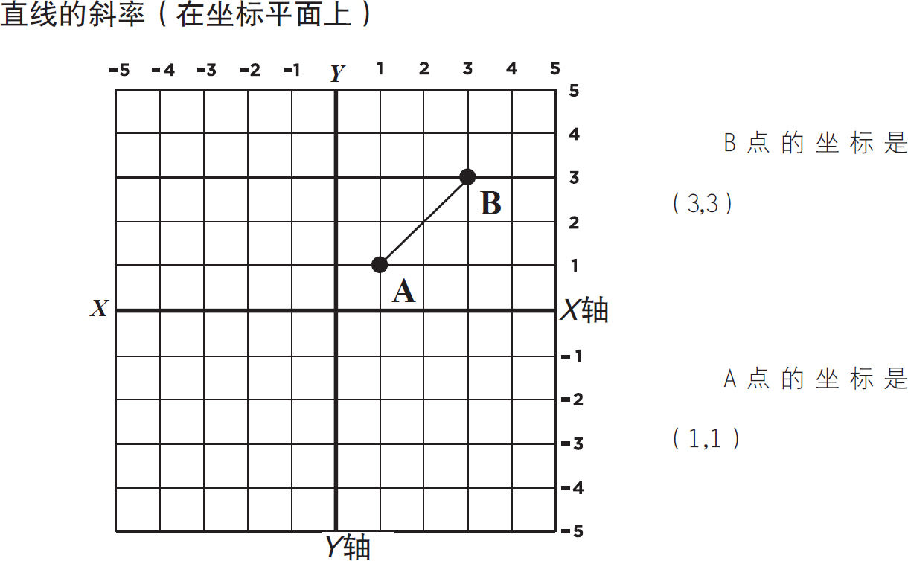
要计算这两点所连成的直线的斜率，可以用下面的斜率公式：
计算一条线的斜率的公式是：
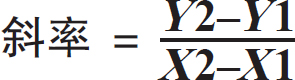
斜率＝垂直移动距离/水平移动距离，或y的变化除以x的变化。
使用上面的线坐标，（1,1）（3,3）：
斜率＝（3-1）/（3-1）＝2/2＝1
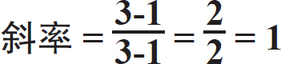
需要准备的东西：
►纸板
►回形针或黄铜纸扣
►CD或DVD或罗盘
►剪刀
►纸
►铅笔
►透明胶带
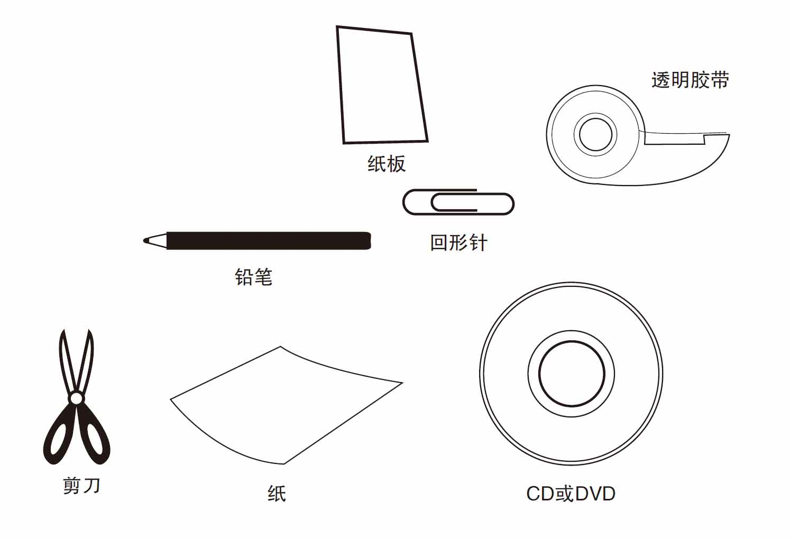
你可以使用下一页的插图作为实验参考，并按步骤操作。
首先，用纸板制作一张CD或DVD大小的圆盘，或者用一个罗盘来创建直径为3厘米的圆盘，如图2-22所示。
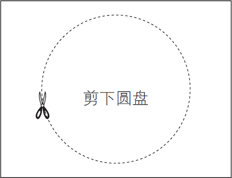
图2-22
接下来，切出如图2-23所示的矩形盖，包括“窗口”孔。

图2-23
把矩形盖对折，在窗口下方打一个孔，见图2-24。在圆盘的中心也打一个孔，如图2-25所示。
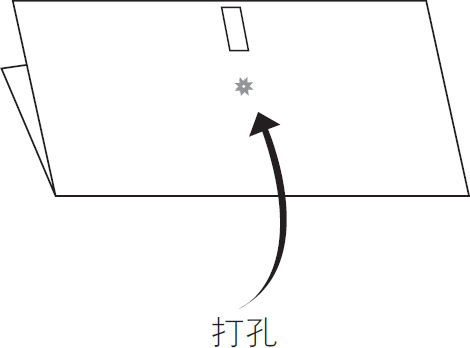 |
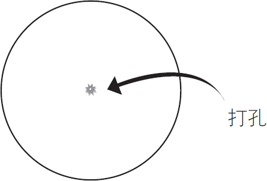 |
| 图2-24 | 图2-25 |
把圆盘放在盖子上，将外盖上的黄铜纸扣或回形针固定夹推入并穿过圆盘的孔洞，如图2-26所示。

图2-26
在窗口周围拨号并查看窗口中的信息，见图2-27。
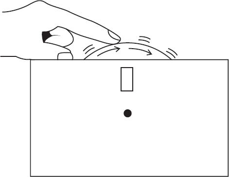
图2-27
下图是实验的一个举例说明。
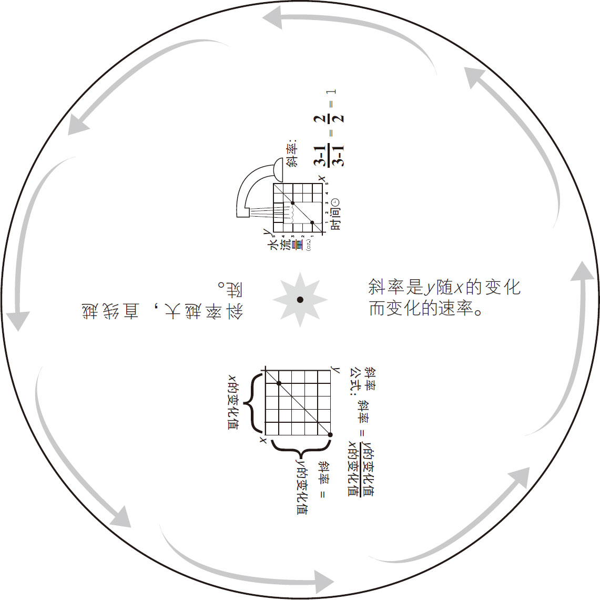
坐标平面可以让你对代数公式或方程有直观的了解。
垂直平面或竖轴由变量y 表示。水平面或横轴由变量x 表示。
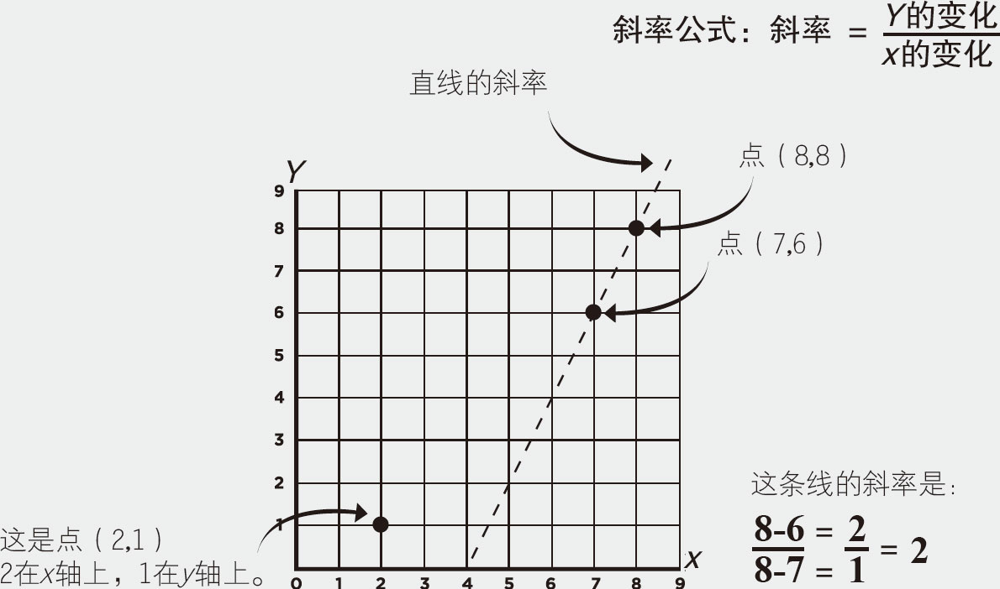
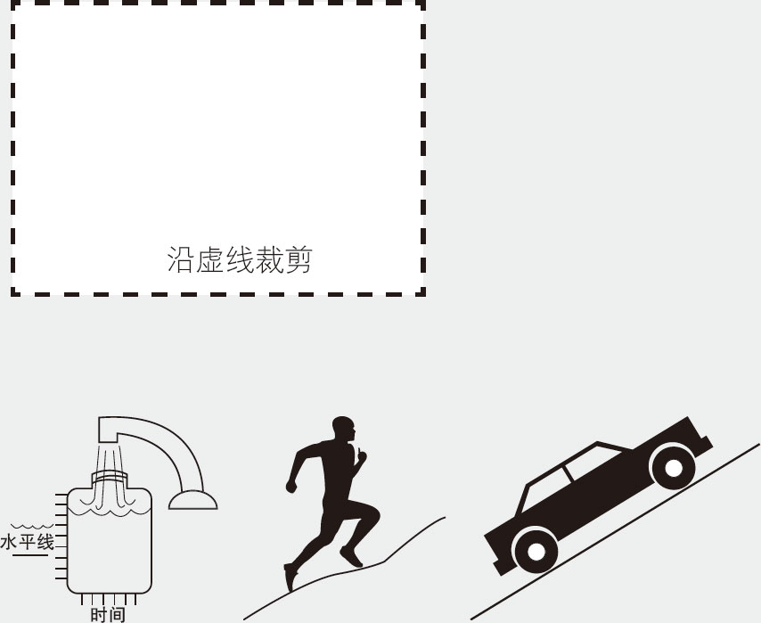
斜线可以表示斜率、速率或两点间的距离等。
坐标平面是在平面上显示的带有编号或者字母的行和列。通常在自动售货机、地图、棋盘和战舰游戏中可以见到。
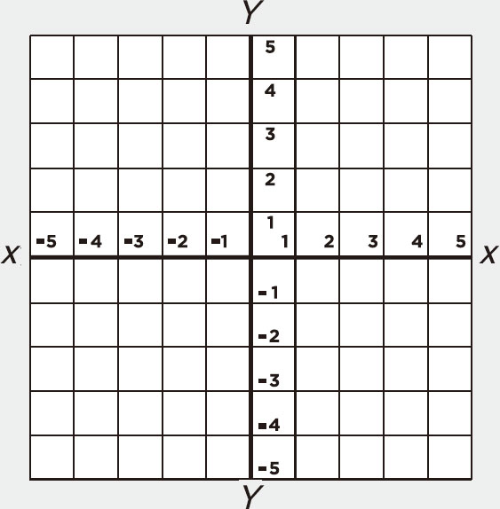
坐标平面
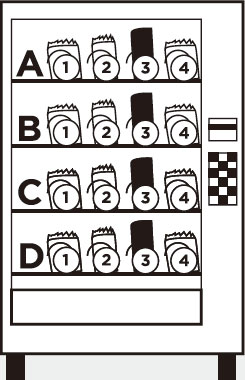
自动售货机
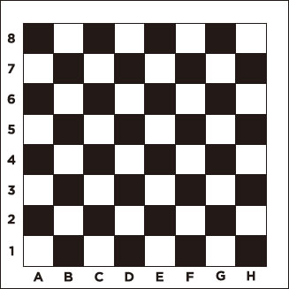
棋盘
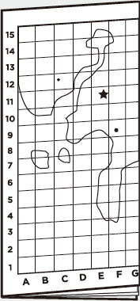
地图
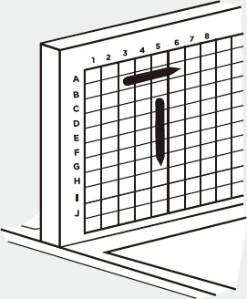
战舰游戏
■当一个题目中有带括号的数、指数、幂或平方根时，你必须按照特定的步骤来计算。你可以记住这个缩写：
B O D M A S
B： 括号
O： 其他项
D： 除法
M： 乘法
A： 加法
首先，计算括号内的项。然后依次计算幂和平方根和其他分组符号。
接下来，计算除法和乘法（从左到右），最后再计算加法和减法（从左到右）。
例：计算4＋6×2，
加法前先算乘法：6×2＝12，
然后：4＋12＝16。
例：计算（1＋6）×2，
先计算括号内：（1＋6）＝7，
然后：（7）×2＝14.